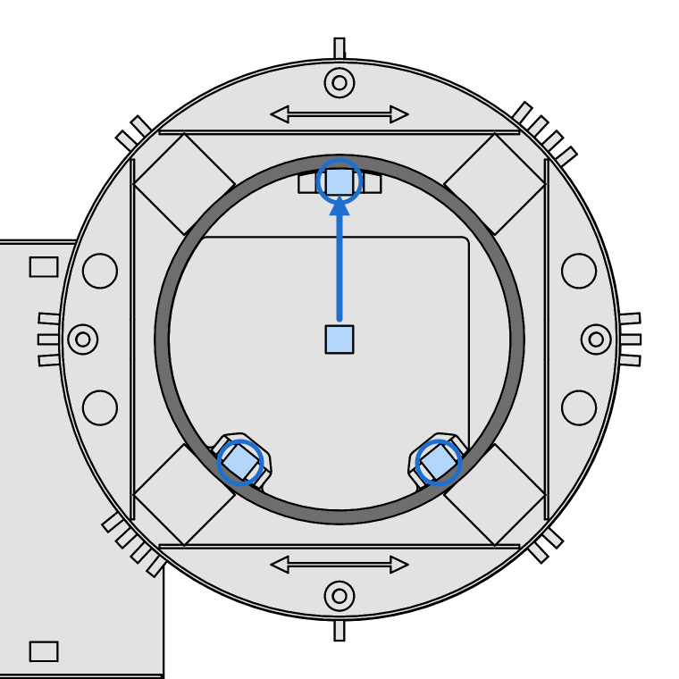
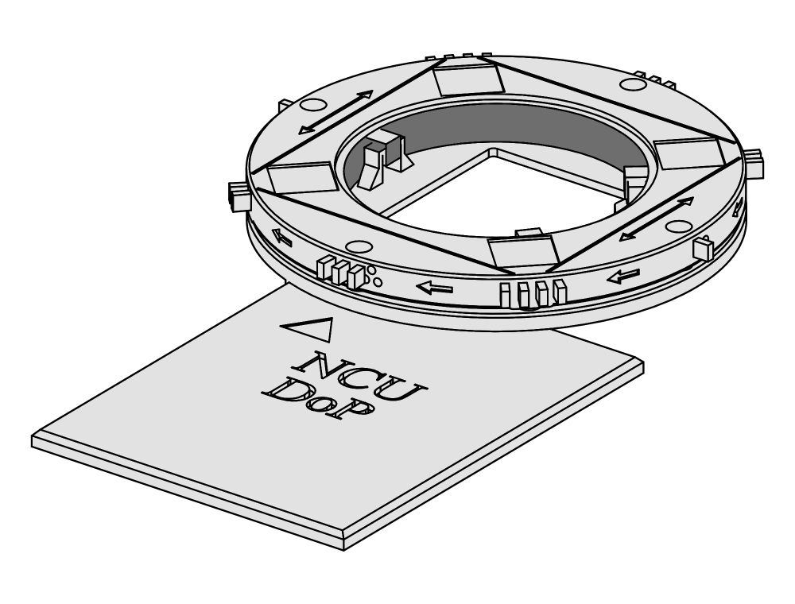
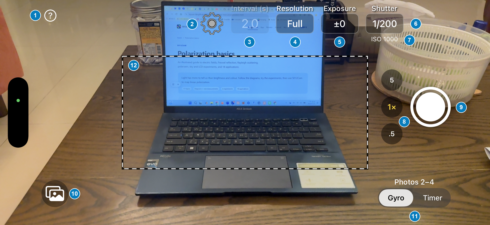
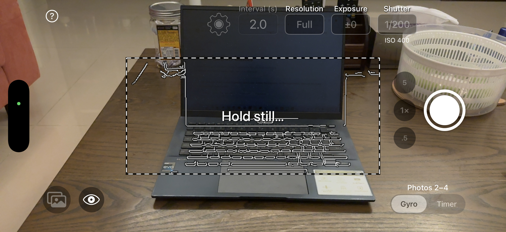
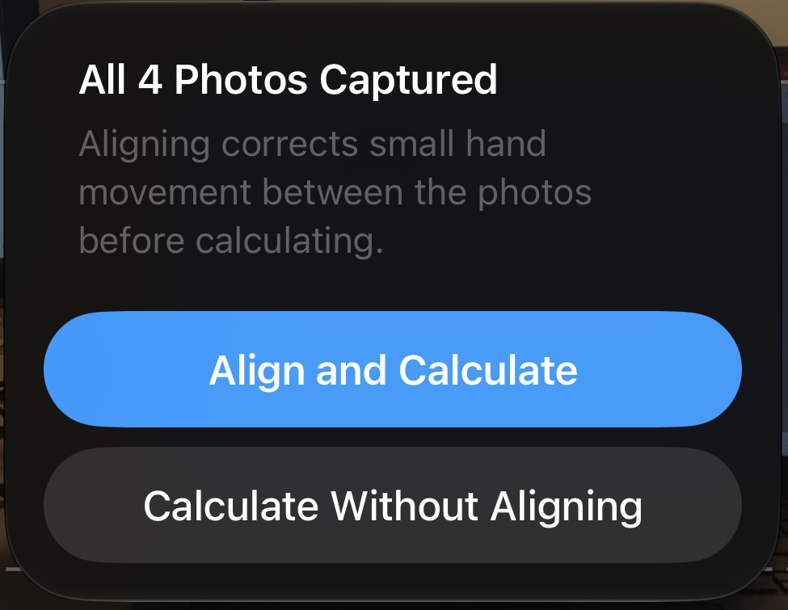
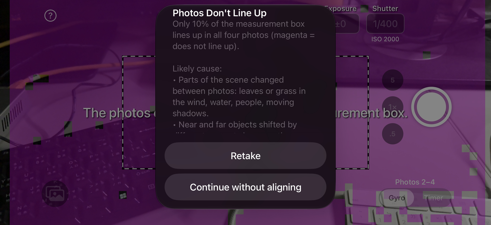
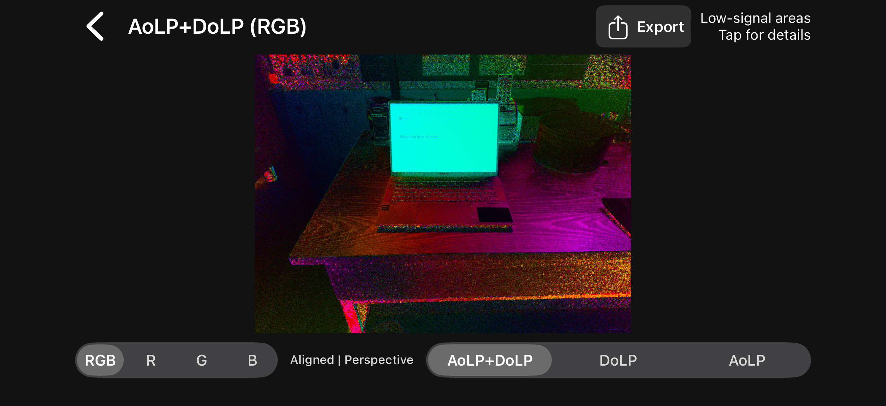
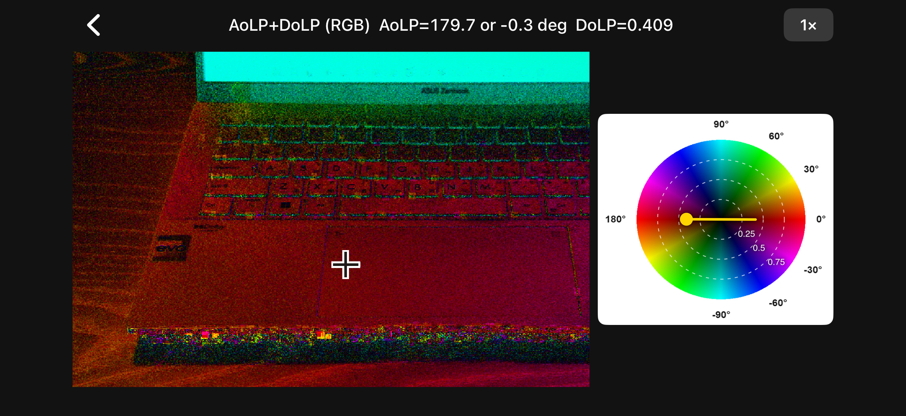
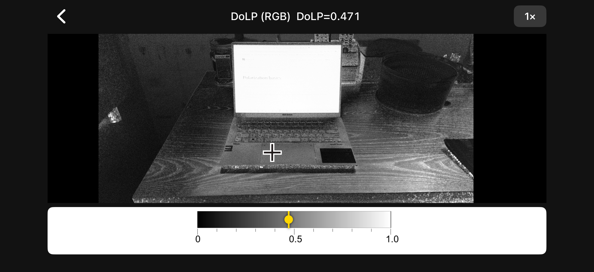
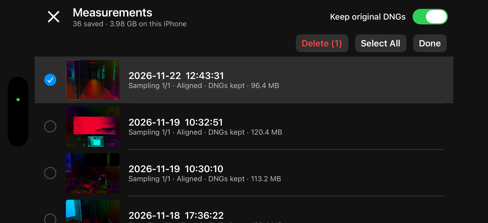

章節目錄
Polarizer Rotator 3D 組裝動畫
播放 3D 動畫查看零件位置與組裝順序，可隨時暫停或拖動進度條。各步驟的操作細節與校正方式見下方圖文說明。
S012Cam 使用者手冊
App 版本 2.0 · 2026 年 11 月 22 日
1. 認識 S012Cam 與相容性
S012Cam 讓 iPhone 成為偏振相機。透過線性偏光片，拍攝同一場景在 0°、45°、90° 和 135° 的四張照片，再計算線偏振度與線偏振角。第一次可以拍玻璃反光、藍天，或放在 LCD 螢幕前的透明塑膠。
App 適用於 iOS 15.6 或更新版本的 iPhone，並以 iPhone 16 Pro 開發與測試。舊款 iPhone 計算一次量測可能需要較長時間。
每款 iPhone 皆顯示 1×。具備超廣角鏡頭者顯示 0.5×；具備望遠鏡頭者顯示 2×、3× 或 5×。例如 iPhone 12 Pro 為 2×，13 Pro 和 14 Pro 為 3×，15 Pro Max 和 16 Pro 為 5×。手機沒有的鏡頭不會顯示。
你可以使用 S012Cam 配件 Polarizer Rotator（Fig. 1），也可以在鏡頭前手持一片線性偏光片，依序轉動四個角度。使用手持偏振片時，建議將 iPhone 裝在腳架上或固定好，並選 Timer。手動估計的角度、偏光片傾斜與位置變化會影響結果；不要將這種操作的數值當成定量參考。操作方式見第 8 節。

2. 開始前的準備
套件有 15 顆小型強力磁鐵及 MagSafe 磁鐵貼片。請遠離兒童、寵物、心律調節器與其他植入式醫療裝置。吞入磁鐵有危險。
圓磁鐵保持疊成一串，裝入時不要翻面。修整列印支撐時，刀口朝外並遠離手部。安裝軸承時只按外環，避免灰塵與沙粒進入。
拿偏光片時握住邊緣。找透光軸時先保留保護膜；貼好偏光片後再撕除。拍攝前必須撕掉保護膜。
準備小鉗子、美工刀、軟布、細筆，以及鈍針或牙籤。在乾淨的桌面操作。
3. 清點零件
| 零件 | 數量 | 用途 |
|---|---|---|
| 底座 | 1 | 固定軸承並連接 MagSafe 底板。 |
| 轉盤 | 1 | 固定偏光片，並在軸承上旋轉。 |
| MagSafe 底板 | 1 | 放置磁鐵貼片，將底座連到 iPhone。 |
| MagSafe 磁鐵貼片 | 1 | 帶尾端的磁鐵環。外徑 54 mm、內徑 46 mm。兩面有黏性，各覆一層藍色膜。 |
| 薄型軸承 | 1 | 50 × 65 × 7 mm，讓轉盤平順旋轉。 |
| 圓磁鐵 | 12 | 底座 8 顆、轉盤 4 顆，讓轉盤在各角度定位。 |
| 方磁鐵 | 3 | 4 × 4 × 4 mm，將軸承內環固定於底座。 |
| 線性偏光片 | 1 | 60 × 60 mm，篩選沿透光軸振盪的光。 |
| 奈米凝膠貼片 | 9 | 10 × 10 mm。4 片固定偏光片，5 片連接 MagSafe 底板與底座。 |
底座固定在 iPhone 上，轉盤則可旋轉。底座指標對準轉盤邊緣的一道、兩道、三道或四道凸紋，表示目前位置。小箭頭表示旋轉方向，雙向箭頭表示偏光片的 0° 透光軸。
| 位置 | 指標對準的凸紋數 | 角度 |
|---|---|---|
| 1 | 1 | 0° |
| 2 | 2 | 45° |
| 3 | 3 | 90° |
| 4 | 4 | 135° |
每組凸紋在相對兩側各出現一次，代表相同的偏光片角度。轉盤每 45° 定位一次，一圈共有 8 次（Fig. 2、Fig. 3）。


4. 組裝轉盤
校正、軸承與 MagSafe 安裝動畫可在網站播放：https://teyuan-lab.github.io/S012Cam-webpage-manual/zh/rotator.html#assembly-movie
步驟 1：檢查列印件
若有列印支撐，先用小鉗子取下較大的支撐，再以美工刀小心修平殘料。刀口朝外，遠離手部。無支撐列印可跳過拆除。確認圓磁鐵孔、軸承凹槽和方磁鐵卡座均無殘料。
步驟 2：壓入圓磁鐵
將 12 顆圓磁鐵保持疊成一串。每次從同一端滑下一顆，讓同一面先入孔。底座裝 8 顆，轉盤裝 4 顆，壓至與表面齊平。若裝反，用鈍針從孔後推出，再翻面裝回（Fig. 4、Fig. 5）。


步驟 3：安裝軸承
將轉盤翻面，把軸承放入圓形凹槽。沿外環均勻按壓，直到貼住止擋（Fig. 6）。

步驟 4：裝到底座
把轉盤和軸承放到底座上，讓軸承內環套住底座凸台（Fig. 7）。

步驟 5：插入方磁鐵
從轉盤中央，將 3 顆方磁鐵分別放入卡座。它們會把軸承內環固定在底座上（Fig. 8）。


步驟 6：檢查旋轉
沿箭頭轉一圈。每 45° 應卡住一次，轉動時不應摩擦。轉盤與底座間約有 1 mm 間隙。方磁鐵應留在底座與軸承內環上，不隨轉盤轉動。若某一格排斥轉盤，將該格的圓磁鐵翻面（Fig. 9）。


5. 安裝與校正偏光片
找出透光軸
- 先保留保護膜。
- 從較低的角度，觀察玻璃桌面等水平亮面的反光。
- 將偏光片放在眼前慢慢旋轉，直到反光最暗。
- 保持偏光片方向不變，在保護膜靠近一角處畫一條垂直短線。這條線表示透光軸（Fig. 10、Fig. 11、Fig. 12）。


貼到轉盤
- 將轉盤轉到位置 1，讓底座指標對準一道凸紋。
- 在轉盤四個凹槽各貼一片凝膠貼片，撕開上層離型膜。
- 讓偏光片保護膜朝上，筆線平行於雙向箭頭，邊緣對準刻線。
- 按壓四角固定，再撕掉保護膜。偏光片四角略超出圓形轉盤是正常的（Fig. 13、Fig. 14）。


6. 安裝 MagSafe 底板並裝上 iPhone
安裝磁鐵貼片
- 先不撕藍膜，將貼片兩面分別靠近 iPhone 背面，找出吸得牢的一面。
- 只撕掉這一面的藍膜，將它朝下壓入 MagSafe 底板的環形凹槽，尾端放入槽口。兩個小耳朵屬於藍膜，會隨膜一起取下。
- 沿整個圓環壓牢。另一面的藍膜等連接底座前再撕。
連接底板與底座
- 將剩下的 5 片凝膠貼片放入五個方形凹槽：中央一片、四角各一片。
- 撕掉貼片上層離型膜及磁鐵貼片另一面的藍膜。
- 將 MagSafe 底板與底座背面邊緣對齊。底板的平背面應朝向 iPhone。
- 均勻按壓 10 秒（Fig. 15）。
裝上手機並檢查
用軟布擦乾淨 iPhone 背面。將轉盤吸附上去，讓鏡頭窗對準後鏡頭。開啟 S012Cam，逐一檢查可用鏡頭。若有邊緣被擋住，取下轉盤後重新吸附。
若要取得完整超廣角畫面，先取下手機殼。手機殼可能遮住超廣角畫面的左上角。
第一次量測前，保持手機水平，拍攝水平亮面的反光。結果應顯示水平偏振。若顯示垂直偏振，將偏光片轉 90° 後重新貼合。

7. 相機畫面
橫拿 iPhone。照片是 iPhone 16 Pro 拍攝第一張之前的畫面，請依藍色編號閱讀下表。相機畫面不再顯示版本號（Fig. 16）。


| 編號 | 名稱 | 操作說明 |
|---|---|---|
| 1 | 使用指南與支援（?） | 點一下，開啟 S012Cam 網站。 |
| 2 | 設定（齒輪） | 點一下，開啟設定。 |
| 3 | Interval (s) | 設定 Timer 模式的拍攝間隔，單位為秒。預設為 2 秒。Gyro 模式不使用此設定，欄位會變暗。 |
| 4 | Resolution | 選擇計算用的解析度：Full、1/2、1/3、1/4、1/5、1/6、1/8 或 1/10。較低解析度可加快計算。 |
| 5 | Exposure | 以 1/3 EV 為一級，在 −2 至 +2 EV 間調整曝光補償。紅色或藍色通道訊號偏弱時，可嘗試調整。 |
| 6 | Shutter | 選擇 1/60 至 1/1000 秒，或 Custom。預設 1/200 秒適合手持拍攝。照片反覆被判定模糊時，選擇更快的快門。 |
| 7 | ISO | 顯示 App 選用的 ISO。點按預覽畫面測光時，App 保留所選快門並調整 ISO。出現 △ 表示 ISO 已達限制；影像可能過暗、過亮，或實際快門已延長。 |
| 8 | 鏡頭選擇 | 點選要使用的鏡頭。所選鏡頭顯示黃色。圖中由上到下為 5、1×、.5。實際按鈕依 iPhone 機型顯示，見第 1 節。 |
| 9 | 快門 | 在 0° 位置按一次，拍攝第一張。Gyro 模式下，之後轉動轉盤並持穩，第 2 至第 4 張會自動拍攝。拍攝中也可按快門，立即拍下目前這張。 |
| 10 | 已儲存量測 | 點一下，開啟已儲存的量測清單。 |
| 11 | Photos 2–4 | 選擇 Gyro 或 Timer。Gyro 為預設：轉動轉盤後持穩，等待自動拍攝。Timer 則依第 3 項的固定間隔拍攝。 |
| 12 | 虛線量測框 | 將要量測的目標保持在框內。拍完第一張後，預覽上會出現第一張的輪廓，協助後續照片對齊。眼睛按鈕可顯示或隱藏輪廓；圖中尚未出現。 |
8. 拍攝四個角度
先選擇如何握持或固定 iPhone，再選擇第 2 至第 4 張的觸發方式。這是兩個分開的選擇。
| 手機與偏振片配置 | 建議拍攝模式 | 計算方式 |
|---|---|---|
| 手持 iPhone＋Rotator | Gyro；也可選 Timer | 建議 Align and Calculate。 |
| 腳架或固定 iPhone＋Rotator | Timer 較方便；也可選 Gyro | 手機與場景未移動時，可選 Calculate Without Aligning。 |
| 固定 iPhone＋手持偏振片 | Timer | 保持固定時可不對齊；手動估計角度的數值不作定量參考。 |
情形一：手持 iPhone，使用 Polarizer Rotator
雙手橫拿 iPhone，螢幕朝向自己。右手拇指操作螢幕，左手中指轉動轉盤。從使用者這側看，轉盤為逆時針旋轉。每次轉一格。手肘靠近身體，輕觸螢幕。
選擇靜止的目標並維持光線穩定。將目標保持在虛線量測框（12）內。點按預覽對焦與測光；App 會保留所選快門並調整 ISO。預設 1/200 秒適合手持拍攝。
情形二：使用腳架或固定 iPhone
將 iPhone 裝在穩固的腳架上，或放在穩定、不會滑動的支撐物上。固定好構圖與鏡頭方向。轉動 Polarizer Rotator 或觸碰螢幕時，不要推動手機。讓手機與被攝物在四張拍攝期間都保持不動。
可以使用 Gyro 或 Timer。若手機固定得很好，旋轉偏光片未必會讓手機產生足夠動作供 Gyro 偵測；此時使用 Timer 較方便。設定足夠的拍攝間隔，轉好角度並等振動停止。四張拍完後，可直接選 Calculate Without Aligning，不必做影像對齊。
若手機、被攝物或構圖曾移動，就不要因為使用腳架而假定影像已對齊。可選 Align and Calculate，或重新拍攝。
Gyro 模式：只按一次快門
- 將 Photos 2–4（11）設為預設的 Gyro。轉盤先放在位置 1，即 0°。
- 按快門（9），拍攝第一張。
- 第一張照片的輪廓會疊加在預覽上。依照下一個角度提示操作，例如「Photo 1 ✓ Turn to … · 45°」。
- 轉到位置 2，即 45°。持穩手機，讓畫面對齊輪廓；允許位移為影格的 3%。陀螺儀會偵測轉動，待手機穩定且畫面對齊後，自動拍攝第二張。
- 依序轉到位置 3（90°）和位置 4（135°）。每次轉動後持穩，等待自動拍攝。
- 四張完成後，選 Align and Calculate 或 Calculate Without Aligning。
如果手機沒有感應到動作，提示可能一直停在「Turn to XX」，不會進入「Hold still」。先將偏振片轉到提示的角度，稍微輕觸或輕敲手機一下，再持穩等待；App 感應到動作後便可繼續等待穩定並拍攝。操作時保持構圖不變。
眼睛按鈕可顯示或隱藏第一張的輪廓。它會在拍完第一張後出現，因此相機畫面編號照片中尚未顯示。
畫面顯示「Hold still…」時，虛線量測框內的白色輪廓提供對照基準（Fig. 17）。持穩並讓實際場景對齊輪廓。左下角的眼睛按鈕可隱藏或顯示輪廓，不是關閉位置檢查。拍攝螢幕時也應固定顯示內容，如同拍攝其他靜止物體。


檢查與重拍
每張照片拍完後，都會立即檢查模糊與位置。若不合格，App 會說明原因並要求持穩。保持目前的偏光片角度，只重拍這個角度；先前照片會保留。
「Hold still…」表示正在等手機穩定。白牆等缺少紋理的區域無法檢查位置，會顯示「Plain area: position is not checked — keep the phone steady.」。此時請自行保持手機穩定。
提示後約 8 秒仍未拍攝時，會出現以下按鈕：
| 按鈕 | 操作 |
|---|---|
| Capture now | 立即拍攝目前這張。 |
| Redo previous | 重拍上一張。 |
| Cancel | 停止這組拍攝。 |
拍攝期間，快門按鈕隨時有效。按一下就會立即拍下目前這張。
Timer 模式
將 Photos 2–4（11）設為 Timer，再設定 Interval（3），預設為 2 秒。按快門拍第一張後，在下一次間隔結束前轉到提示的角度。第 2 至第 4 張依固定間隔拍攝。Gyro 模式不使用 Interval，因此該欄位會變暗。
沒有 Rotator：手持偏振片並手動轉動

- 將 iPhone 裝在腳架上或固定好。選擇靜止的場景。
- 握住線性偏光片的邊緣，放在所選鏡頭前。四個角度都要讓所選鏡頭的完整視野通過偏光片的透明區域。選用夠大的偏光片，靠近鏡頭但不要碰觸鏡頭；手指與邊框都不得進入視野。保持偏光片大致平行於手機背面，每個角度都檢查預覽是否被遮擋或出現暗角。
- 先讓透光軸平行於橫放 iPhone 的長邊，作為 0°。注意：偏光片的外框或邊緣不一定就是透光軸。
- 將 Photos 2–4（11）設為 Timer。預設間隔為 2 秒；若來不及轉動及停穩，設定更長時間。
- 按快門拍第一張。從螢幕這側看，依序逆時針轉到 45°、90°、135°，每次相對 0° 位置累計角度。依提示在下一張拍攝前轉好，保持角度並停穩。
- 不要移動 iPhone。若手機與場景始終不動，四張拍完後選 Calculate Without Aligning（Fig. 18）。
手動轉動時，角度、傾斜與位置不容易重複。這種方式可觀察偏振圖樣，但數值不作定量參考。固定手機與使用 Timer 可減少操作干擾，不能消除偏振片角度誤差。這項限制只指手持偏振片、手動估計角度的方式。使用 Polarizer Rotator 並正確安裝、校正及依定位角度拍攝時，量測數值可作參考。
對齊與計算


手持 iPhone 時，建議選 Align and Calculate，修正照片間的小幅位移。使用腳架或已固定 iPhone，且手機與場景在四張拍攝期間都未移動時，可直接選 Calculate Without Aligning，使用原始照片計算（Fig. 19）。
若出現「Photos Don’t Line Up」，先看四張照片中量測框的對齊比例（Fig. 20）。此例只有 10% 對齊；洋紅色覆蓋表示未對齊區域。風吹樹葉、水面、人、移動陰影，或近遠物體的視差，都可能造成這個問題。先排除原因，再選 Retake 重拍整組。Continue without aligning 會用未對齊照片計算，錯位邊緣可能產生假的偏振；必須了解限制才繼續。若其他情況提供 Use aligned areas (…%)，則僅使用通過檢查的區域。


近物與遠物同時入鏡時，視差可能讓對齊失敗。可退後、選較平面的場景，或改用腳架。若反覆被判定模糊，選擇更快的快門。量測區內盡量避開移動的人、樹葉與波浪（Fig. 21）。

9. 查看量測結果
| 顯示模式 | 讀圖方式 |
|---|---|
| AoLP+DoLP | 色相表示線偏振角，亮度表示線偏振度。 |
| DoLP | 線偏振度。黑色是 0，白色是 1。 |
| AoLP | 線偏振角。對照色標讀取色相對應的角度。角度以第一張照片的偏光片方向為 0°，朝第二張照片的方向計算，範圍為 0° 至小於 180°。黑色表示角度未定義。 |
選 RGB 查看合成結果，或選 R、G、B 查看單一色彩通道。合成結果會先平均三個通道的線偏振 Stokes 參數，再計算 DoLP 和 AoLP。
各個影像都支援手指縮放與點選，包括 AoLP+DoLP、DoLP、AoLP，以及 RGB、R、G、B 通道。用兩指縮放，拖移可查看其他區域。放大後可點 1× 恢復原畫面。點一下結果圖進入全螢幕，再點選要查看的像素，就能讀取數值並在色標上查看對應位置。相差 180° 的角度代表同一個偏振方向。DoLP 很低時，解讀 AoLP 須特別留意。
點 Tap for details 查看對齊狀態和曝光警示。使用局部對齊時，洋紅色區域沒有可用的量測值。
範例 1：讀取結果畫面
筆電與桌面的同一個場景可用不同顯示模式與色彩通道比較（Fig. 22）。主圖為 AoLP+DoLP（RGB）：色相表示線偏振角，亮度表示線偏振度，不是物體原本的顏色。


左下角切換 RGB、R、G、B；右下角切換 AoLP+DoLP、DoLP、AoLP。Aligned | Perspective 是這筆結果的對齊狀態，不代表畫面每一點都沒有誤差。上方 Export 可匯出結果。
點 Tap for details 查看此筆資料的低訊號、過曝或其他警示。圖中只有 Low-signal areas 提示；並不是每筆量測都會同時出現所有警示。暗處的彩色雜點不應直接解讀成可靠的偏振細節。
範例 2：點選位置讀取角度與偏振度
點結果圖開啟全螢幕讀值畫面，再點選想查看的位置。十字與上方數字會對應同一個取樣點（Fig. 23）。此例十字位於筆電掌托，不是 LCD 螢幕。

179.7° 與 −0.3° 相差 180°，表示同一條線偏振軸。色輪的黃色標記方向表示 AoLP，離中心的距離表示 DoLP。中心為 0、外緣為 1；0.409 表示此點的線偏振度約為 40.9%，不能套用到整個掌托或螢幕。
放大影像再選點
在全螢幕圖上以雙指放大、拖曳平移，再點選細部位置。右上角出現 1× 時，點它可回到原始檢視比例（Fig. 24）。AoLP+DoLP、DoLP、AoLP 及 RGB／R／G／B 各通道都可用手勢查看。


範例 3：讀取 DoLP 灰階圖
DoLP 圖以黑色表示 0、白色表示 1，灰階代表線偏振度，而不是一般照片的亮度。點選位置後，在上方讀值，並在下方灰階尺查看黃色標記（Fig. 25）。


螢幕在這張 DoLP 圖上較亮，掌托與桌面則有不同灰階。應在各區域個別點選、查看品質警示後再比較，不能只依假色或畫面亮度判定可靠性。
10. 儲存、分享與匯出


右上角 Keep original DNGs 為開啟。藍色勾選圓圈表示已選 1 筆，因此按鈕為 Delete (1)。Select All 可全選，Done 可離開選取模式。若要開啟某筆結果，先點 Done，再點該列。每列顯示日期、取樣比例、對齊、DNG 狀態及容量；刪除前先確認選取筆數，操作步驟見下文（Fig. 26）。
找到並重新開啟量測
- 在結果畫面點返回箭頭，回到相機畫面。點左下角的 Measurements 圖示。
- 依拍攝日期和時間找量測，最新的量測排在最上方。每列會顯示縮圖、檔案大小、是否有 DNG，以及可用的取樣和對齊資訊。
- 點一下該列就能重新開啟結果。如果畫面顯示 Done，先點它離開選取模式。
S012Cam 會將完成的量測存到 iPhone。如果結果畫面顯示 Save incomplete（儲存未完成），可點 Tap for details 查看哪些檔案未能儲存。
選擇是否保留原始 RAW 照片
開始下一次拍攝前，在 Measurements 設定 Keep original DNGs（保留原始 DNG）。這個開關預設開啟，會保留四張原始 RAW 照片。若要節省空間，可關閉開關。App 仍會儲存重新開啟和匯出結果所需的計算資料。各筆已存量測的 DNG 保留狀態，以當時拍攝的設定為準。
分享或備份整筆量測
- 在 Measurements 將要分享的量測向左滑，點 Share。
- 在 iPhone 的分享選單選擇可用的目的地，例如 AirDrop 或儲存到「檔案」。若要另外備份一份，請選擇 S012Cam 資料夾以外的位置。
- 到目的地確認資料夾和需要的檔案都在，再刪除原本的量測。
新量測的資料夾包含 measurement.json（拍攝設定）、input_1.tiff 至 input_4.tiff（計算結果所用的資料），以及在開啟保留設定時儲存的 1.dng 至 4.dng。如果已匯出結果，資料夾裡也會有 export 子資料夾。也可以直接到檔案 App › 瀏覽 › 我的 iPhone › S012Cam 查看各筆量測的資料夾。
刪除量測
- 刪除一筆。將該筆量測向左滑，點 Delete。出現確認提示後，再點一次 Delete。
- 刪除多筆。點 Select 後逐筆選取，或點 Select All 全選。點 Delete (n)，核對提示中的筆數和檔案大小後再確認。若決定保留檔案，可點 Done 離開選取模式。
在 S012Cam 內刪除量測，會從 iPhone 永久移除整個量測資料夾，包含原始 DNG 和存在其中的匯出檔。要保留的檔案請先分享或複製一份。
匯出量測
- 開啟量測結果並點 Export。
- 出現 Export Complete 後，點 Share… 並選擇分享目的地。這裡分享的是存有結果圖和匯出說明的 export 子資料夾。若也要分享原始照片和計算資料，請用第 10 節量測清單中的 Share。
- 之後要找匯出檔，可開啟檔案 App › 瀏覽 › 我的 iPhone › S012Cam，找到該筆量測的資料夾，再開啟 export。
| 檔案 | 用途 |
|---|---|
| PNG | 供瀏覽的 AoLP+DoLP、DoLP、AoLP 影像，包含 RGB 合成結果與各色彩通道。 |
| 32 位元浮點 TIFF | 供定量分析的逐像素 S0、S1、S2、DoLP、AoLP 數值圖。AoLP 以度為單位。無效或未定義的數值存成 NaN。 |
| export.json | 記錄檔案清單、影像尺寸，以及單位和像素值的說明。 |
舊量測如果標成 Pictures only，仍可查看已存的影像，但無法匯出精確的量測數值。
11. 取下轉盤與保養
一手握穩 iPhone，另一手握住底座安裝板的一端。像取下其他 MagSafe 配件一樣，從這一端向外傾斜取下。不要拉扯或扭轉轉盤。
凝膠貼片留在轉盤上，取下轉盤時不用拆貼片。若曾拆下偏光片或 MagSafe 底板，貼片沾灰後失去黏性，可用清水沖洗。不要用肥皂、酒精或面紙。完全自然風乾後再裝回。
偏光片用柔軟乾布清潔，不要用酒精或溶劑。轉盤遠離沙、水與高溫，不要長時間放在高溫車內或強烈日照下。
12. 常見問題
| 畫面或狀況 | 處理方式 |
|---|---|
| Camera Permission | 開啟設定，允許 S012Cam 使用相機。 |
| 找不到某個鏡頭 | 按鈕依 iPhone 機型顯示。等啟動校正完成，再選可用鏡頭。 |
| 停在「Turn to XX」，未進入「Hold still」 | 先轉到指定角度，稍微輕觸或輕敲手機一下，再持穩等待，保持構圖不變。 |
| Gyro 模式沒有自動拍攝 | 轉到提示角度後持穩並對齊輪廓。約 8 秒後可選 Capture now、Redo previous 或 Cancel。也可直接按快門。 |
| 出現 Plain area | 區域缺少紋理，無法檢查位置。保持手機穩定，或改拍有紋理的目標。 |
| 反覆判定模糊 | 選更快的快門，並支撐 iPhone。App 重拍時保持目前角度。 |
| Timer 還沒轉完就拍了 | 加長 Interval，依提示在每張拍攝前轉好角度。 |
| ISO 警示或訊號偏弱 | 查看 ISO（7）與 Tap for details。調整 Exposure（5）或 Shutter（6）後，重新拍完整一組。 |
| 彩邊或對齊失敗 | 持穩、用腳架、退後，或選較平面的場景。嘗試 Align and Calculate。 |
| 角度持續不正確 | 確認 0° 透光軸及 0°、45°、90°、135° 順序，重做第 6 節的偏光片檢查。 |
| 某一定位點排斥轉盤 | 從圓磁鐵孔後推出磁鐵，翻面裝回。 |
| 沒有定位感或轉動摩擦 | 確認 12 顆圓磁鐵壓平。重新安裝軸承，清除支撐殘料或髒污。 |
| 預覽出現暗角 | 重新對準鏡頭窗。要完整超廣角畫面，取下手機殼。 |
| 轉盤容易滑落 | 依第 6 節檢查磁鐵貼片方向。 |
| 底板或偏光片鬆脫 | 用清水洗淨沾灰的凝膠貼片，完全風乾後裝回。 |
支援網站：https://teyuan-lab.github.io/S012Cam-webpage-manual/
App Store：https://apps.apple.com/app/id6834323253
聯絡信箱：teyuan@gmail.com
Department of Optics and Photonics, National Central University, Taiwan.
國立中央大學光電科學與工程學系。